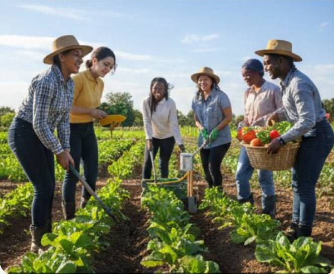
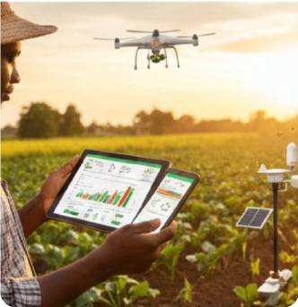
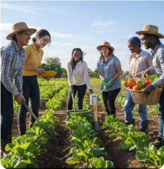
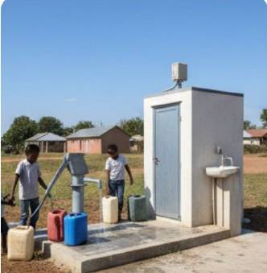
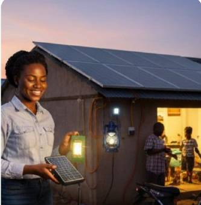
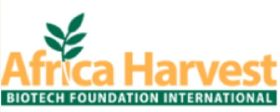
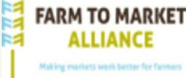
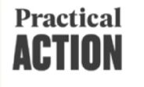

Business development services that grow African enterprises
We design and deliver BDS programmes on behalf of foundations, donors and institutions, combining applied research, structured training and hands-on mentorship.
Commission a programme See how we work
Africa’s BDS ecosystem is fragmented and hard for funders to invest in with confidence
Little structured support
Most micro and small enterprises never access structured training, mentorship or market linkage.
Uneven provision
A patchwork of providers with inconsistent quality and weak coordination between research, funders and practice.
Thin evidence of impact
Few providers can show credible outcome data, leaving donors unable to compare or scale.
Few trusted partners
Funders often lack a vetted local partner who can design, deliver and report against their framework.
Why funders partner with a Living Lab, not a classroom
Curricula are co-created with end-user entrepreneurs, tested in the field, and backed by a team spanning fintech, statistics, R&D and investment analysis, able to speak both funder and enterprise language.
stronger adoption of pilot innovations tested through Living Lab methods, versus traditional R&D pilots.
Indicative benchmark from Living Lab methodology across comparable African pilots.Your delivery partner for BDS programming, not another applicant for the same grant
Organisations commission Lliffton to design and deliver BDS programmes on their behalf, backed by a Living Lab methodology that co-creates solutions with the entrepreneurs who will use them.
Training & Capacity-Building
Bootcamps on investment readiness, financial modelling and market entry.
Advisory & Mentorship
One-on-one and group coaching on strategy, finance and operations.
Market Linkage & Matchmaking
Curated introductions to buyers, distributors and corporates.
Applied Research & Diagnostics
Feasibility studies, market assessments and impact evaluations.
Incubation & Accelerators
Milestone-based cohort programmes from idea to investable venture.
Fundraising Facilitation
Preparing trained enterprises to access grants, blended finance and follow-on investment.
From idea to investable venture
Many African startups fail not for lack of ideas, but because research, funding and markets operate in silos. Our incubation programme joins them up: evidence-driven product development, access to Living Lab testbeds, and capital readiness, all in one structured pipeline.
Application
Founders apply with their business idea. We assess the problem being solved, the team and the fit with our sector focus areas.
Validation
Market and behavioural studies test the idea with the people who will use it, so evidence, not assumption, shapes the product.
MVP
Validated ideas are built into a minimum viable product, co-created with end users through Living Lab methods.
Pilots
The MVP is tested in real conditions on Living Lab testbeds, producing the traction and evidence investors look for.
Research embedded in incubation
Applied socio-economic research and market studies run alongside product development, not after it.
Living Lab testbeds
Access to real-world settings where solutions are co-created and piloted with end users.
Investor readiness
Support to prepare the story, numbers and evidence needed to raise the right kind of capital.
Capital linkages
Introductions to grants, foundations, DFIs and VCs, on pathways from pre-seed through Series A/B.
Africa–Europe exchange
Entrepreneur exchange programmes that open doors to European research, policy and funding networks.
Market access
Turning research into market-ready solutions that address real socio-economic challenges.
Have a venture or a funding partnership in mind?
Founders can apply to join the pipeline. Funders and institutions can co-fund a cohort.
A commissioned delivery model, built on a continuous feedback loop
Diagnose
Scope the sector, geography and enterprise segment with the commissioning partner.
Co-Design
Build the curriculum and delivery plan together, grounded in applied research.
Deliver
Run blended training, digital tools and mentorship to agreed cohorts.
Measure
Track outcomes against the funder’s own indicators on a set schedule.
Iterate
Feed field evidence back into the curriculum to keep programmes current.
Sectors where evidence-based BDS moves the needle most

Agrifintech

Youth in Agriculture

WASH

Energy
Plus: Digital Inclusion & Market Systems, and Financial Inclusion.
Partners we seek
European Foundations & Donors
Grants for research, incubation and exchange, including Horizon Europe, Digital Europe and Erasmus+.
US Foundations & Universities
Foundations, donor-advised funds and applied-research partners.
Universities & Living Lab Networks
Co-funded applied research, joint testbeds and academic hosting.
DFIs & Development Agencies
Programme co-funding for investment-readiness pipelines.
Current partners & collaborators



The people behind the delivery
 JO
JOJolliff Ochieng
CEO & CO-FOUNDERVision and strategy lead.
 CA
CACherryl Atieno
FINANCE & ADMINFinance and administration.
 KJ
KJKevin Jemase
CO-FOUNDERPartnerships and business development.
 JG
JGJack Gitau
CO-FOUNDER & CTODigital platform and AI lead.
 DO
DODr. Odipo
CO-FOUNDERR&D lead, PhD in Statistics.
Join the team behind the delivery
We are building a team that can speak both funder and entrepreneur language. Tell us how you would contribute.
Programme delivery
Training, mentorship and cohort management across our sectors.
Research & evaluation
Applied research, diagnostics, statistics and impact measurement.
Digital & data
Digital platform, tools and AI for programme delivery.
Partnerships & finance
Funder relations, business development and grant administration.
Don’t see a role listed?
Send your CV and a short note to info@llifftonlivinglab.com.
Partner with Lliffton Living Lab
Discuss how a partnership can help you deliver measurable BDS outcomes across your target markets.
Apple Wood, Off Ngong Road, Nairobi, Kenya
+254 725 924 767